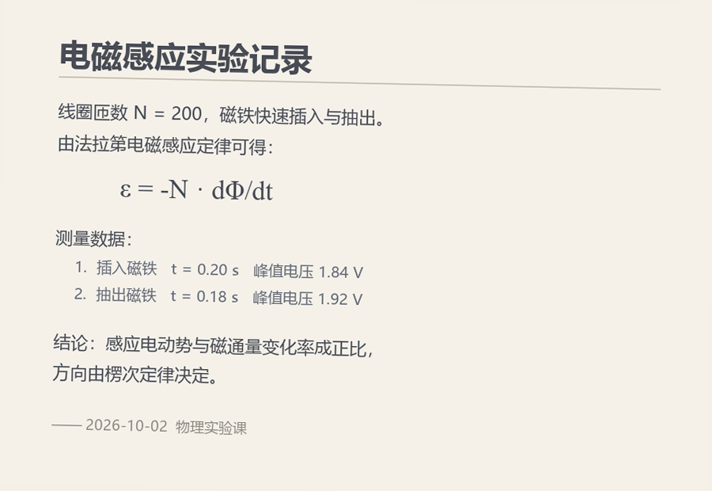

note-studio 验收报告
生成时间 2026-10-02T05:04:26.855Z · 模式 离线确定性 · 报告由 node acceptance/run.mjs 生成
PASS（含跳过）
通过 17 项 · 跳过 1 项
每一条都可在本机复现：命令与验证方式写在表格里。
每一条都可在本机复现：命令与验证方式写在表格里。
▶ 想直接上手操作？
打开 public/playground.html ——
可操作样例：编辑（源码 / 分栏 / 可视化）、实时渲染、载入样例照片转写、导出真实的 .md 与 .json。
直接双击也能用（离线模式）；用本地服务打开 /notes/playground.html 时，图片转写会走**真实的既有 AI 接口**。
81零依赖测试通过
29/29渲染与往返检查
24/24论坛集成（AI 版）
24/24论坛集成（根目录版）
一、验收标准与证据
| 编号 | 验收标准 | 证据 | 结果 |
|---|---|---|---|
| AC-1 | 编辑器完全离线自足：不引用任何外网资源，渲染库全部内置 验证：扫描 public/index.html 的外链 + 检查 vendor/ 内容 明细（2 项）
|
外链 0 个；vendor 内置 71 个文件 | 通过 |
| AC-2 | Markdown 渲染正确（标题/表格/任务/代码块） 验证：jsdom 执行 render.js 明细（4 项）
|
4/4 项 | 通过 |
| AC-3 | LaTeX 渲染成 .katex 结构，页面不残留 $ 源码 验证：jsdom 执行 render.js + KaTeX auto-render 明细（6 项）
|
渲染出 2 个公式 · 6/6 项 | 通过 |
| AC-4 | 可视化模式往返：公式 TeX 原样还原（反斜杠不被转义） 验证：jsdom 执行 render.js 的 createSerializer + turndown 明细（6 项）
|
6/6 项 | 通过 |
| AC-5 | 保存为一个 .md 文件和一个 .json 文件，内容与提交一致 验证：store.save() 真实落盘 + 读回比对 |
产出 sample-note.json + sample-note.md；字节 1561；读回一致 | 通过 |
| AC-6 | .json 记录基础数据，且与正文一致（sha256 重算比对） 验证：重算 sha256 + 逐项核对统计/结构/公式/任务/表格/代码块/图片/链接/标题 明细（11 项）
|
sha256 一致；字符 1036 · 行 57 · 公式 10+2 · 任务 2/3 · 表格 1 · 标题 7 | 通过 |
| AC-13 | 安全：文件名路径穿越被切断；未登录读写被拒；静态穿越被拒 验证：store 写 ../../evil + 路由 currentUser=null + static 穿越 |
../../evil → 落成 evil（未写出目录）；不存在返回 null | 通过 |
| AC-11 | 独立可搬运：一条命令起服务，包内无 npm 依赖 验证：startNoteServer() + 读 package.json |
服务自检 200，版本 1.0.0；src/ 7 个模块 | 通过 |
| AC-10 | 未配置 AI 时优雅降级（503 ai_not_configured），编辑与导出不受影响 验证：POST /api/notes/convert（未注入 AI）+ POST /api/notes 正常保存 |
/convert → 503 ai_not_configured；同时保存成功并产出 http-check.json + http-check.md | 通过 |
| AC-7 | 图片 → Markdown / LaTeX（离线契约级）：多模态消息形状正确、关掉 json_object、结果解析出两段 验证：注入假 chat 捕获报文 + convertImage 解析 |
报文含 image_url(130 KB) + text；json=false；解析出 markdown 89 字 + latex 50 字 | 通过 |
| AC-8 | 图片 → Markdown/LaTeX（真实视觉模型） 验证：node acceptance/run.mjs --live |
本次未运行（默认离线；加 --live 且配好 AI_API_KEY / AI_MODEL 即可） | 跳过 |
| AC-9 | 复用既有 AI 接口、不自建：模块内不发 HTTP、不碰密钥；上游错误码原样透传 验证：源码扫描 src/ai-bridge.mjs + 注入 ai_timeout 错误跑一遍 convertImage 明细（5 项）
|
无自建 HTTP 调用；无鉴权头；错误码 ai_timeout → HTTP 504 | 通过 |
| AC-12 | 接回论坛是最小改动：1 个胶水文件 + 3 处补丁，不改 forum-ai / 不改论坛 SPA / 不建表 验证：检查胶水文件与两个论坛 server.js 的补丁锚点 |
胶水 106 行；已打补丁的论坛：src/server.js、.inspect/forum-ai-full/forum/src/server.js | 通过 |
| AC-14 | 零依赖测试全部通过（node:test，无第三方依赖） 验证：node:test run() 在进程内跑 tests/*.test.mjs |
通过 81 项，失败 0 项 | 通过 |
| AC-16 | 可操作样例：能点、能改、能转写、能导出（不只是只读报告） 验证：jsdom 打开 public/playground.html，真实点击「载入样例照片 → 转写 → 插入 → 切模式 → 导出 → 清空」 明细（47 项）
|
47/47 项操作检查 | 通过 |
| AC-17 | 正式编辑器：手动编辑、图片转写归入编辑工具栏、实时预览可关可开 验证：jsdom 打开 public/index.html，真实点击「工具栏 / 预览开关 / 模式切换 / 导出」 明细（40 项）
|
40/40 项编辑器检查 | 通过 |
| AC-15 | 接回论坛后功能可用（AI 版布局） 验证：runForumIntegrationChecks：真实 HTTP + 真实登录态 + 真实落盘 明细（24 项）
|
24/24 项 | 通过 |
| AC-15b | 接回论坛后功能可用（根目录布局，无 forum-ai 也要能降级） 验证：runForumIntegrationChecks：真实 HTTP + 真实登录态 + 真实落盘 明细（24 项）
|
24/24 项 | 通过 |
二、样例审查：输入
待转写的图片（固定样例）

130 KB · 900×620 · 由 acceptance/tools/make-sample-image.py 生成，可换成你自己的照片。
笔记正文（输入）
# 电磁感应实验记录
> 物理实验课 · 2026-10-02 · 法拉第电磁感应定律的验证
## 实验目的
验证感应电动势与磁通量变化率的关系：
$$
\varepsilon = -N \frac{\mathrm{d}\Phi}{\mathrm{d}t}
$$
其中行内符号 $N$ 为线圈匝数，$\Phi$ 为穿过线圈的磁通量。
## 装置与参数
| 器材 | 规格 | 备注 |
| --- | --- | --- |
| 线圈 | $N = 200$ 匝 | 截面积 $S = 4.0\ \mathrm{cm^2}$ |
| 磁铁 | 钕铁硼 | 表面磁感应强度约 $0.35\ \mathrm{T}$ |
| 采集卡 | 采样率 $10\ \mathrm{kHz}$ | 峰值保持模式 |
## 数据记录
1. 插入磁铁：$t = 0.20\ \mathrm{s}$，峰值电压 $1.84\ \mathrm{V}$
2. 抽出磁铁：$t = 0.18\ \mathrm{s}$，峰值电压 $1.92\ \mathrm{V}$
由峰值电压反推平均变化率：
$$
\left|\frac{\Delta\Phi}{\Delta t}\right| = \frac{U}{N} = \frac{1.84}{200} = 9.2 \times 10^{-3}\ \mathrm{Wb/s}
$$
## 结论
- [x] 感应电动势与磁通量变化率成正比
- [x] 方向由楞次定律决定（插入与抽出时极性相反）
- [ ] 补充不确定度分析（仪器精度 ±0.5%，重复测量 5 次）
## 数据处理脚本
```python
import numpy as np
voltage = np.loadtxt("coil.csv", delimiter=",")
peak = voltage.max()
flux_rate = peak / 200 # N = 200
print(f"峰值 {peak:.3f} V，平均变化率 {flux_rate:.3e} Wb/s")
```
## 参考
- 教材：《大学物理实验》第 4 章
- 数据与图：[实验原始记录](https://example.com/lab/emf-induction)

三、样例审查：渲染结果
下面这块是**用编辑器自己的渲染管线**（public/render.js + 内置 KaTeX）在你这台机器上现算的，不是截图。
渲染中…
四、样例审查：图片转写结果（离线假 AI（契约级验证））
转写出的 Markdown
# 电磁感应实验记录
线圈匝数 $N = 200$，关系式：
$$
\varepsilon = -N\frac{\mathrm{d}\Phi}{\mathrm{d}t}
$$
转写出的 LaTeX
\varepsilon = -N\frac{\mathrm{d}\Phi}{\mathrm{d}t}
模型：acceptance-fake-vision · 用量 prompt 512 / completion 128
⚠️ 离线模式下这是固定应答：验证的是报文形状、解析与落盘，不是识别质量。要验识别质量请配好 AI_API_KEY 与视觉模型后跑 --live。
五、样例审查：交付物
sample-note.md
# 电磁感应实验记录
> 物理实验课 · 2026-10-02 · 法拉第电磁感应定律的验证
## 实验目的
验证感应电动势与磁通量变化率的关系：
$$
\varepsilon = -N \frac{\mathrm{d}\Phi}{\mathrm{d}t}
$$
其中行内符号 $N$ 为线圈匝数，$\Phi$ 为穿过线圈的磁通量。
## 装置与参数
| 器材 | 规格 | 备注 |
| --- | --- | --- |
| 线圈 | $N = 200$ 匝 | 截面积 $S = 4.0\ \mathrm{cm^2}$ |
| 磁铁 | 钕铁硼 | 表面磁感应强度约 $0.35\ \mathrm{T}$ |
| 采集卡 | 采样率 $10\ \mathrm{kHz}$ | 峰值保持模式 |
## 数据记录
1. 插入磁铁：$t = 0.20\ \mathrm{s}$，峰值电压 $1.84\ \mathrm{V}$
2. 抽出磁铁：$t = 0.18\ \mathrm{s}$，峰值电压 $1.92\ \mathrm{V}$
由峰值电压反推平均变化率：
$$
\left|\frac{\Delta\Phi}{\Delta t}\right| = \frac{U}{N} = \frac{1.84}{200} = 9.2 \times 10^{-3}\ \mathrm{Wb/s}
$$
## 结论
- [x] 感应电动势与磁通量变化率成正比
- [x] 方向由楞次定律决定（插入与抽出时极性相反）
- [ ] 补充不确定度分析（仪器精度 ±0.5%，重复测量 5 次）
## 数据处理脚本
```python
import numpy as np
voltage = np.loadtxt("coil.csv", delimiter=",")
peak = voltage.max()
flux_rate = peak / 200 # N = 200
print(f"峰值 {peak:.3f} V，平均变化率 {flux_rate:.3e} Wb/s")
```
## 参考
- 教材：《大学物理实验》第 4 章
- 数据与图：[实验原始记录](https://example.com/lab/emf-induction)

sample-note.json（记录基础数据）
{
"schema": "note-studio/document@1",
"generator": {
"name": "note-studio",
"version": "1.0.0"
},
"file": {
"name": "sample-note.md",
"baseName": "sample-note",
"extension": ".md",
"mimeType": "text/markdown; charset=utf-8",
"encoding": "utf-8",
"bytes": 1561,
"lines": 57,
"sha256": "a2c0e58c0d09452554df9f7bad2c973e7822e0df898777755d18296e80f7371d"
},
"title": "电磁感应实验记录",
"stats": {
"characters": 1036,
"charactersNoSpaces": 855,
"words": 340,
"cjkCharacters": 243,
"latinWords": 97,
"lines": 57,
"nonEmptyLines": 37,
"paragraphs": 20,
"readingMinutes": 2
},
"structure": {
"maxDepth": 2,
"headings": [
{
"level": 1,
"text": "电磁感应实验记录",
"line": 1,
"slug": "电磁感应实验记录"
},
{
"level": 2,
"text": "实验目的",
"line": 5,
"slug": "实验目的"
},
{
"level": 2,
"text": "装置与参数",
"line": 15,
"slug": "装置与参数"
},
{
"level": 2,
"text": "数据记录",
"line": 23,
"slug": "数据记录"
},
{
"level": 2,
"text": "结论",
"line": 34,
"slug": "结论"
},
{
"level": 2,
"text": "数据处理脚本",
"line": 40,
"slug": "数据处理脚本"
},
{
"level": 2,
"text": "参考",
"line": 51,
"slug": "参考"
}
],
"outline": [
{
"level": 1,
"text": "电磁感应实验记录",
"line": 1,
"slug": "电磁感应实验记录",
"children": [
{
"level": 2,
"text": "实验目的",
"line": 5,
"slug": "实验目的",
"children": []
},
{
"level": 2,
"text": "装置与参数",
"line": 15,
"slug": "装置与参数",
"children": []
},
{
"level": 2,
"text": "数据记录",
"line": 23,
"slug": "数据记录",
"children": []
},
{
"level": 2,
"text": "结论",
"line": 34,
"slug": "结论",
"children": []
},
{
"level": 2,
"text": "数据处理脚本",
"line": 40,
"slug": "数据处理脚本",
"children": []
},
{
"level": 2,
"text": "参考",
"line": 51,
"slug": "参考",
"children": []
}
]
}
]
},
"math": {
"inline": 10,
"display": 2,
"total": 12,
"expressions": [
{
"type": "display",
"tex": "\\varepsilon = -N \\frac{\\mathrm{d}\\Phi}{\\mathrm{d}t}",
"line": 9
},
{
"type": "inline",
"tex": "N",
"line": 13
},
{
"type": "inline",
"tex": "\\Phi",
"line": 13
},
{
"type": "inline",
"tex": "N = 200",
"line": 19
},
{
"type": "inline",
"tex": "S = 4.0\\ \\mathrm{cm^2}",
"line": 19
},
{
"type": "inline",
"tex": "0.35\\ \\mathrm{T}",
"line": 20
},
{
"type": "inline",
"tex": "10\\ \\mathrm{kHz}",
"line": 21
},
{
"type": "inline",
"tex": "t = 0.20\\ \\mathrm{s}",
"line": 25
},
{
"type": "inline",
"tex": "1.84\\ \\mathrm{V}",
"line": 25
},
{
"type": "inline",
"tex": "t = 0.18\\ \\mathrm{s}",
"line": 26
},
{
"type": "inline",
"tex": "1.92\\ \\mathrm{V}",
"line": 26
},
{
"type": "display",
"tex": "\\left|\\frac{\\Delta\\Phi}{\\Delta t}\\right| = \\frac{U}{N} = \\frac{1.84}{200} = 9.2 \\times 10^{-3}\\ \\mathrm{Wb/s}",
"line": 30
}
]
},
"media": {
"images": [
{
"alt": "实验装置示意图",
"url": "images/setup.png",
"title": "线圈与采集卡接线"
}
],
"links": [
{
"text": "实验原始记录",
"url": "https://example.com/lab/emf-induction"
}
]
},
"code": {
"fences": 1,
"blocks": [
{
"language": "python",
"lines": 6,
"characters": 183
}
]
},
"tables": 1,
"tasks": {
"total": 3,
"checked": 2,
"unchecked": 1
},
"timestamps": {
"createdAt": "2026-10-02T05:04:14.304Z",
"updatedAt": "2026-10-02T05:04:14.304Z",
"savedAt": "2026-10-02T05:04:14.304Z"
},
"ai": {
"conversions": []
}
}
六、怎么自己复现
cd note-studio && node acceptance/run.mjs上面这条会重新跑出本报告与样例产物。另有：
node tests/run.mjs # 零依赖测试（81 项） NODE_PATH=<装有 jsdom>/node_modules node tests/browser/verify-render.mjs node tests/browser/verify-integration.mjs # 论坛集成（AI 版） node tests/browser/verify-root-forum.mjs # 论坛集成（根目录版） node examples/demo.mjs # 端到端样例（自带假 AI）七、请你人工确认
- 公式渲染效果是否符合预期（第三节）
- 三种编辑模式是否够用（源码 / 分栏 / 可视化）
- 图片转写的字段与格式是否合你的用法
- sample-note.json 的字段是否需要增删
- 接入方式（1 个胶水文件 + 3 处补丁）是否可接受
- 是否需要我按你的真实照片跑一次 --live